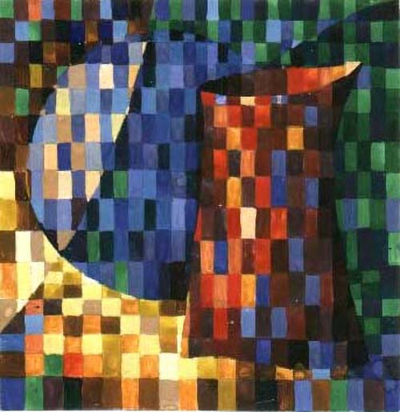

Система 8: 8-ступенный цветовой круг

Эта схема включает 7 цветов спектра плюс пурпурный — итого 8. Основных цветов в этом круге четыре — к, ж, з, с. Остальные четыре — промежуточные. Это оранжевый, голубой, фиолетовый и пурпурный. Если рассматривать спектр белого света в хороший спектроскоп, то можно увидеть 120 цветов. Кроме того, средний наблюдатель различает 30 пурпурных. Итого в полном и точном спектральном круге вместо восьми цветов можно было бы увидеть сто пятьдесят (150).
Система 9: 10-ступенный цветовой круг
Он образован прибавлением к восьми цветам Системы 8 двух цветов: желто-зеленого и зелено-голубого в соответствующих местах между желтым и зеленым и между зеленым и голубым. В этом круге каждый диаметр укажет своими окончаниями на два дополнительных цвета.
Десятиступенный круг служит хорошим пособием для составления полярной композиции. Пять основных взаимно-дополнительных пар смотрите в разделе Полярные пары.
Система 10: 12-ступенный цветовой круг
Этот круг можно назвать «физиологическим», в отличие от 8- и 10-ступенных, «физических». Полярные цвета в этом круге — котрастные. Если зафиксировать взгляд на одном из цветов этого круга, то на сетчатке возникает по индукции противоположный цвет, называемый контрастным. Например, после фиксации красного в том же месте поля зрения возникает ощущение зеленого. После желтого — фиолетовый, после оранжевого — синий, и т.д.
Построение 12-ступенного круга
Строим равносторонний треугольник, вписанный в круг. В вершинах его помещаем красный, желтый и синий цвета. Посредине каждой из трёх дуг круга помещаем оранжевый, зеленый и фиолетовый цвета. Это смешанные цвета первой ступени. Затем посредине между каждой парой соседних цветов помещаем смешанные цвета второй ступени: к-ор, ж-з, гол., с-ф и пурпурный. Получился 12-ступенный круг. Пользуясь этой схемой, можно подбирать гармоничные сочетания по два, три, четыре и более цветов.
Иллюстрации к статье
